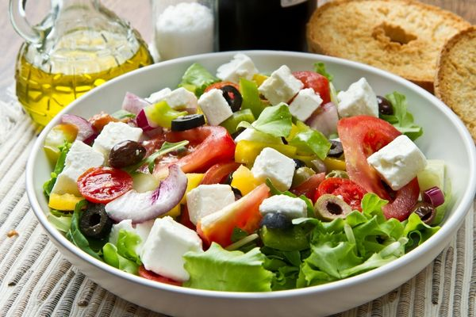
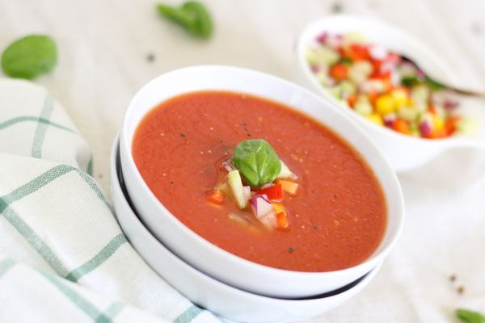
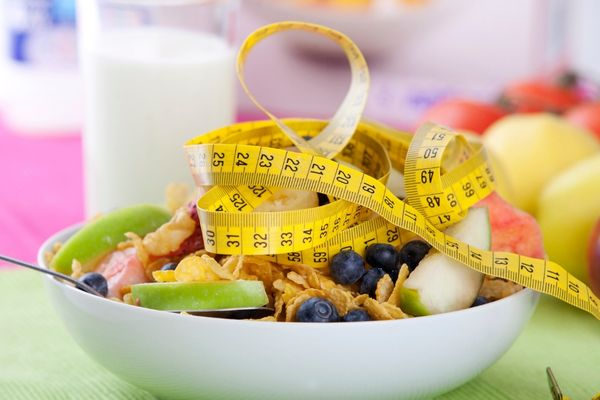
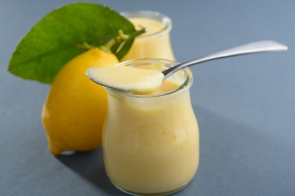

Canan Karatay Diyeti: 2 Öğün, Düşük Karbonhidrat
Son dönemlerde beslenme konusu ile ilgili yaptığı açıklamaları ile oldukça popüler olan Canan Karatay, 1943 Elazığ doğumludur. Üsküdar Amerikan Lisesi’ndeki eğitimini 1961 yılında tamamlayan Karatay, 1967 yılında da İstanbul Üniversitesi Tıp Fakültesi’nden mezun olmuştur.
İç hastalıkları uzmanlığını da aynı üniversitede tamamlayan doktor, kazandığı burs sayesinde Liverpool Regional Cardiac Center’da kardiyoloji uzmanlığını tamamlamıştır. Kalp ve İç Hastalıkları Profesörü unvanına sahip olan Canan Karatay kendi geliştirdiği diyet listesi ile büyük ilgi görmüştür.
Prof. Dr. Canan Karatay diyeti ve beslenme ipuçları için en doğru kaynak doktorun kendi kitapları ve kaynaklarıdır. Canan Karatay diyeti kitabı ismi Karatay Diyeti’dir. Bilgileri ve diyet listesini uygulamadan önce lütfen kendisinden onay alınız.

Canan Karatay Diyeti Nedir?
Vücut hormonlarının salgılanma sürelerinin takibine dayalı olarak Canan Karatay tarafından geliştirilen Karatay diyeti 2 öğün yemek yemeyi savunur.
2 öğünden fazla yemek tüketiminin kişinin kilo almasına neden olduğunu belirten Karatay diyeti mantığı doğrultusunda öğünler arasında en az 5 saatlik bir süre gerekir.
5 saatlik açlık süresinde vücudun leptin hormonu artarak metabolizmanın daha hızlı çalışması sağlanır.
Leptin hormonu vücut tarafından ihtiyaç duyulan yakıtın kullanılması amacıyla salgılanan bir hormondur.
Leptin hormonu salgılandığında vücut yağ yakmaya devam eder.
Düşük karbonhidrat alımına dayalı olan Canan Karatay diyeti ile vücut, depoladığı yağlardan kısa bir süre içinde kurtulabilir.
Son yılların popüler bir diyeti olan Karatay diyeti ile zayıflayan ünlüler de bulunmaktadır.
Canan Karatay diyeti yapanlar uzun vadede kalıcı sonuçlar elde etmek için genel olarak beslenme düzeninde kalıcı değişimler yapılması gerektiğini bilirler.
Canan Karatay diyeti listesi kısıtlı bir süreçte şok zayıflama amaçlı uygulandığında etkileri de kısa sürer; çünkü hızlı verilen kilolar aynı hızda geri döner.
Fakat, Karatay diyet programını şeker ve sağlıksız karbonhidrat kaynaklarından uzaklaşma alışkanlığı edinebilmek ve bu gıdalara muadil oluşturabilme yetisini kazanabilmek için uygulayabilirsiniz.

Canan Karatay Diyeti Nasıl Uygulanır?
Karatay diyeti şeker orucu olarak düşünülebilir
Sağlıklı yağ ve proteinlerin tüketimi serbest olacak şeklinde Karatay diyeti özeti yapılabilir.
Canan Karatay diyeti kuralları içinde yeterli su tüketiminin altı çizilir.
Diyeti uygularken mutlaka günde en az 8-10 bardak su tüketilmelidir.
Karatay diyeti yemekleri uzun sürede ve düşük ısıda pişirilmelidir
Öğün aralarında en az beşer saat olmalıdır.
Canan Karatay sağlıklı beslenme diyeti 2 öğünü önerir. 2 öğünle çok zorlananlar kendi bedenlerini dinleyerek ve gerekirse uzman kontrolünde uygun şekilde 3 öğün listesine uyabilirler.
Ara öğünlerde ayran, limonlu su ya da şekersiz bitki çayları tüketilebilir.
Yemeklerde tereyağı ya da zeytinyağı kullanımı, karbonhidrat kaynağı olarak kısıtlı oranda meyve tüketimi Karatay diyeti kuralları arasındadır.
Karatay diyeti yapanlar diyetteki yasakları kesinlikle tüketmemeli ve diyete ek olarak mutlaka fiziksel aktivitelerini artırmalıdır.
Karatay diyeti aynı zamanda ülkenin en popüler karbonhidrat diyetleri arasında yer alır.
Beyaz un, ekmek ve şekerin yanı sıra, patates, pirinç, makarna vs gibi karbonhidrat kaynaklarının tüketimi de sınırlandırılır
Gluten hassasiyetine sahip Çölyak hastaları için de tercih edilebilecek ideal bir beslenme programıdır.
Canan Karatay Diyeti Yasaklar Listesi

Ekmek başta olmak üzere gluten içeren arpa, çavdar ve yulaflı tüm besinler
Rafine şeker ve şeker içeren tüm besinler
Karpuz, kavun, üzüm, incir ve muz gibi yüksek oranda şeker içeriğine sahip olan meyveler
Glisemik indeksi yüksek olan pirinç ve patates
Margarin, ayçiçeği yağı
Kavrulmuş ya da tuzlu olan kuru yemişler (çiğ kuru yemişler hariç)
Yapay tatlandırıcılar, et suyu tabletler, hazır soslar ve tüm hazır gıdalar
Alkol içeren tüm içecekler
Gazlı ve asitli içecekler
Hazır meyveli yoğurtlar ve meyveli sütler
Organik olmayan tüm besinler
Canan Karatay Diyeti Sağlıklı mı Zararlı Mı?
Tahıl grubunun diyetten çıkarılması sinir sisteminde önemli rol oynayan B grubu vitaminlerinin alınmasını önleyerek ciddi rahatsızlıklara yol açabilir.
Karatay diyeti meyve sınırlaması getirdiği için vitamin ve mineral alımını da kısıtlar ve ciltte, saçlarda ve tırnaklarda problemler oluşturabilir.
Vücudun ihtiyaç duyduğu vitamin ve mineralleri sınırlandıran Karatay diyeti emzirenler için uygun bir diyet değildir
Protein içeren besinler genel olarak hayvansal kaynaklı olduğundan dolayı Karatay diyeti vejetaryen kişiler tarafından yapılması oldukça zor bir diyettir.
Şeker bağımlılığı arınması zor bir alışkanlık olduğu için sık sık tatlı krizleri yaşanması olağan bir durumdur; bu aşamada iradeniz en büyük destekçiniz olacak.
